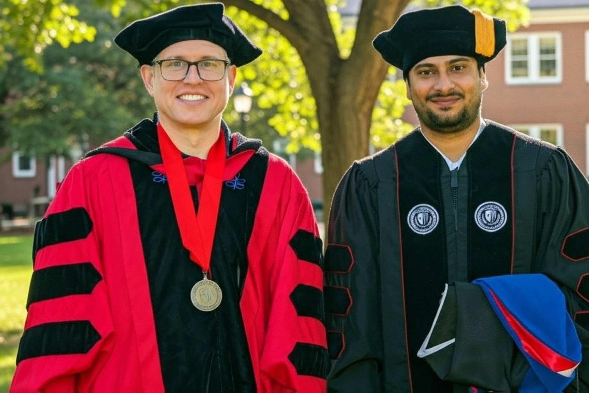
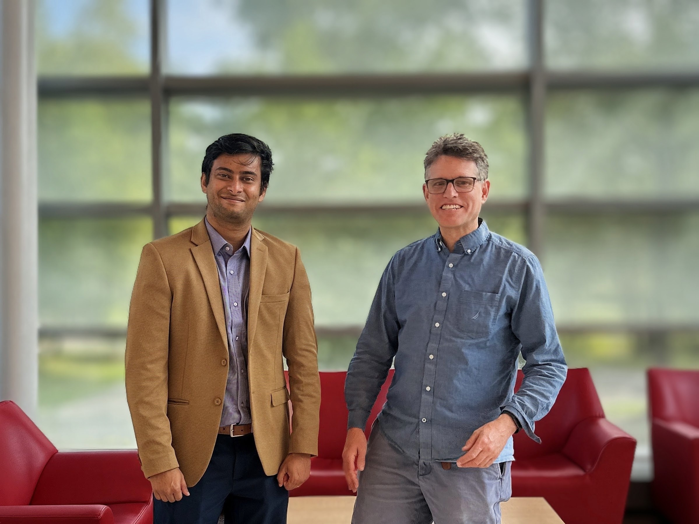

Going Beyond Worst-Case: Defending My Ph.D. Thesis
In 2024, I defended my doctoral thesis, Going Beyond Worst-Case: A Study on Cache Adaptivity and Machine Learning Advice, and graduated with a Ph.D. in Computer Science from Stony Brook University. The thesis asks one question: what happens when we stop designing algorithms for the most pessimistic input and start designing them for the systems they actually run on?


Classical analysis assumes a fixed amount of memory and an adversarial future. Real machines share memory across processes, and real workloads leave patterns that a model can learn. My thesis studies both:
- Cache adaptivity: We showed when cache-oblivious algorithms, such as matrix multiplication and sorting, stay efficient even when the memory available to them changes during execution (ESA'22). This matters for shared-memory machines and cloud systems, where memory is never constant.
- Machine learning advice: We designed online algorithms that use ML predictions to beat worst-case bounds when the predictions are good, and still keep guarantees when they are wrong. Examples include ski rental with a discount (WALCOM'22, Theoretical Computer Science 2022) and online list update with predictions (LATA at SIGMETRICS'23).
- Theory that meets practice: Both lines of work replace a single pessimistic number with performance bounds that track how good the environment or the advice is, which makes the guarantees useful to engineers.
I am grateful to my advisor, Prof. Michael A. Bender, for six years of guidance and patience. Thank you to Prof. Rezaul A. Chowdhury for chairing my committee, and to Prof. Joseph S. B. Mitchell and Prof. Helen Xu for serving on it. I carry the same habit into my work at Google today: measure the real system first, then design for it.